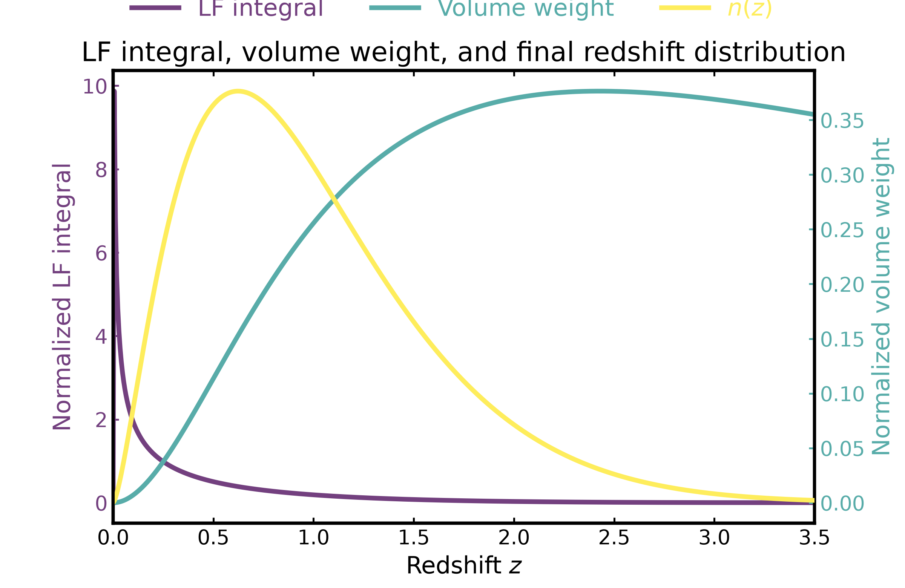

LF-weighted parent n(z)#
LF-weighted parent n(z)#
A luminosity function-dependent redshift distribution builds the parent redshift distribution directly from a luminosity function.
The model converts an apparent magnitude grid into absolute magnitude, evaluates the luminosity function, integrates over magnitude, and weights the result by a redshift-dependent volume factor.
This provides a physically motivated way to construct a parent \(n(z)\) for a magnitude-limited sample. Instead of choosing the redshift distribution shape directly, one specifies the luminosity function, the apparent magnitude limits, the luminosity distance, and the volume weight.
The resulting parent distribution has the form
where \(W_V(z)\) is the redshift-dependent volume weight. Apparent magnitudes are converted to absolute magnitudes using the luminosity distance and optional K-correction.
Why use an LF-weighted n(z)?#
Analytic parent \(n(z)\) models such as Smail distributions are useful because they provide smooth and controllable redshift distributions. However, they do not explicitly encode how a galaxy sample is selected by apparent magnitude.
The LF-weighted model is useful when one wants the parent redshift distribution to respond directly to:
the assumed luminosity function,
the survey magnitude limit,
the bright-end magnitude cut,
the luminosity distance relation,
the comoving volume element,
and optional K-corrections.
This makes the model especially useful for survey-design studies, magnitude-limit tests, and comparisons between galaxy populations with different luminosity functions.
Model ingredients#
The LF-weighted parent distribution combines four main ingredients.
- Redshift grid
The user supplies the one-dimensional redshift grid on which the parent \(n(z)\) should be evaluated.
- Magnitude grid
Binny constructs an internal apparent magnitude grid between
m_brightandm_lim. This grid is used for the luminosity function integral.- Luminosity function
The user supplies either a plain callable or an LFKit
LuminosityFunctionobject. Plain callables must acceptlf(M, z, **kwargs). LFKit objects are evaluated through their_as_callableorphiinterface.- Cosmology or helper callables
The luminosity distance and volume weight can be supplied either through a PyCCL cosmology or through explicit helper callables. This keeps the model backend-agnostic while still supporting Binny’s CCL-backed cosmology helpers.
Magnitude conversion#
At each redshift, Binny converts the apparent magnitude grid into an absolute magnitude grid using
where \(\mu(z)\) is the distance modulus and \(K(z)\) is an optional K-correction.
The distance modulus is computed from the luminosity distance in Mpc,
The luminosity distance must be positive and finite. The K-correction, if supplied, must return finite values on the redshift grid.
LF integration#
After converting the magnitude grid, the luminosity function is evaluated on the two-dimensional absolute magnitude grid. The model then integrates over apparent magnitude,
This quantity describes the magnitude-limited luminosity function contribution as a function of redshift.
The final unnormalized redshift distribution is then
If normalize=True is used, the result is normalized over the supplied
redshift grid.
How LF and volume combine#
The luminosity function integral gives the magnitude-limited galaxy number density as a function of redshift. The cosmology supplies the comoving volume weight. Their product gives the unnormalized redshift distribution.
The following figure illustrates these two contributions and the resulting parent \(n(z)\). All three curves are normalized independently for illustration.


Show Python source code
import matplotlib.pyplot as plt
import numpy as np
import pyccl as ccl
from lfkit import LuminosityFunction
from binny.style import palette
from binny.cosmology.ccl_wrappers import comoving_volume_weight
from binny.nz import nz_model
z = np.linspace(0.0, 3.5, 600)
cosmo = ccl.Cosmology(
Omega_c=0.2607,
Omega_b=0.049,
h=0.6766,
sigma8=0.8102,
n_s=0.9665,
transfer_function="bbks",
matter_power_spectrum="linear",
)
lf = LuminosityFunction(
model="schechter",
parameters={
"phi_star": 3.0e-3,
"m_star": -21.0,
"alpha": -1.25,
},
)
lf_integral = nz_model(
"luminosity_function",
z,
lf=lf,
cosmo=cosmo,
m_lim=25.3,
m_bright=-26.0,
n_m=512,
volume_weight_fn=lambda z_eval: np.ones_like(z_eval),
normalize=True,
)
volume = comoving_volume_weight(cosmo, z)
volume_scaled = volume / np.trapezoid(volume, z)
nz = nz_model(
"luminosity_function",
z,
lf=lf,
cosmo=cosmo,
m_lim=25.3,
m_bright=-26.0,
n_m=512,
normalize=True,
)
color_lf = palette[0]
color_volume = palette[2]
color_nz = palette[4]
fig, ax1 = plt.subplots(figsize=(8.0, 5.2))
fig.patch.set_facecolor("white")
ax2 = ax1.twinx()
ax3 = ax1.twinx()
ax3.spines["right"].set_position(("outward", 65))
line1, = ax1.plot(
z,
lf_integral,
color=color_lf,
linewidth=3.0,
label="LF integral",
)
line2, = ax2.plot(
z,
volume_scaled,
color=color_volume,
linewidth=3.0,
label="Volume weight",
)
line3, = ax3.plot(
z,
nz,
color=color_nz,
linewidth=3.0,
label=r"$n(z)$",
)
ax1.set_xlabel("Redshift $z$")
ax1.set_ylabel("Normalized LF integral", color=color_lf)
ax2.set_ylabel("Normalized volume weight", color=color_volume)
ax3.set_ylabel(r"Normalized $n(z)$", color=color_nz)
ax1.tick_params(axis="y", colors=color_lf)
ax2.tick_params(axis="y", colors=color_volume)
ax3.tick_params(axis="y", colors=color_nz)
for ax in [ax1, ax2, ax3]:
ax.tick_params(direction="in", axis="both", which="both")
lines = [line1, line2, line3]
labels = [line.get_label() for line in lines]
legend = fig.legend(
lines,
labels,
frameon=False,
loc="upper center",
bbox_to_anchor=(0.5, 1.04),
ncol=3,
)
for line, text in zip(legend.get_lines(), legend.get_texts(), strict=True):
text.set_color(line.get_color())
ax1.set_xlim(z.min(), z.max())
ax1.set_title("LF integral, volume weight, and final redshift distribution")
plt.show()
Normalization and interpretation#
When normalize=True is used, the returned parent distribution is scaled
so that
In this case, the output should be interpreted as a normalized redshift probability density.
When normalize=False is used, the output preserves the relative change
in the unnormalized number density caused by the luminosity function,
cosmology, K-correction, and magnitude limits.
This is useful for diagnostics because it allows one to inspect how the total LF-weighted contribution changes when model assumptions are varied.
Backend-agnostic design#
The model is intentionally backend-agnostic: distances, volume weights,
K-corrections, and luminosity functions are supplied as callables. This keeps
the redshift-distribution interface compatible with different cosmology and LF
implementations, including LFKit LuminosityFunction objects.
If a PyCCL cosmology is supplied, Binny uses its CCL-backed luminosity-distance and comoving-volume helpers whenever explicit helper callables are not provided.
Alternatively, users can supply both luminosity_distance_mpc_fn and
volume_weight_fn directly. This is useful for tests, simplified toy
models, or non-CCL cosmology backends.
Connection to LFKit#
LFKit luminosity functions can be passed directly to the model. This allows Binny to use the LFKit interface for Schechter, evolving Schechter, double Schechter, power-law, Gaussian, lognormal, composite, or conditional luminosity function models.
This is useful because the LF physics remains in LFKit, while Binny handles the redshift grid, cosmology-dependent distance and volume factors, and the parent \(n(z)\) interface used by tomography.
Connection to tomography#
The LF-weighted model returns a parent \(n(z)\). It does not directly construct tomographic bins.
Once evaluated, the resulting parent distribution can be passed into the usual Binny tomography workflow. The later tomography step introduces bin edges, selection rules, and possibly photometric uncertainty models.
It is therefore helpful to keep the conceptual separation clear:
the LF-weighted model describes the overall parent galaxy population,
the tomography machinery describes how that population is partitioned.
Summary#
The LF-weighted parent \(n(z)\) model provides a bridge between luminosity function modelling and tomographic redshift distributions.
It is useful when the redshift distribution should be tied to an apparent magnitude limit, a luminosity function, luminosity distances, volume weights, and optional K-corrections.
For executable usage examples, see the example page on LF-weighted \(n(z)\) models.